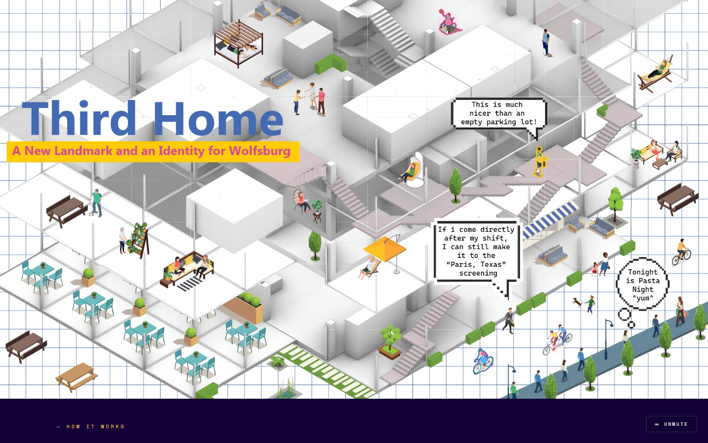
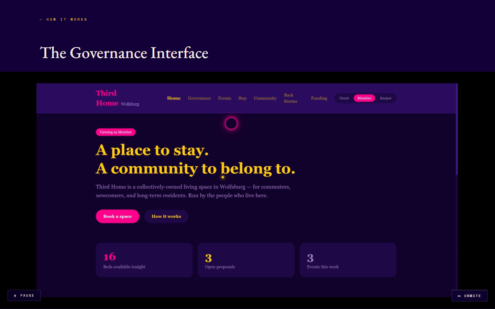
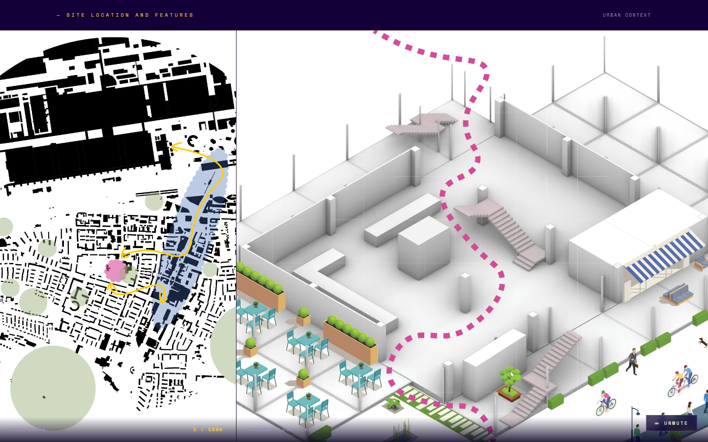
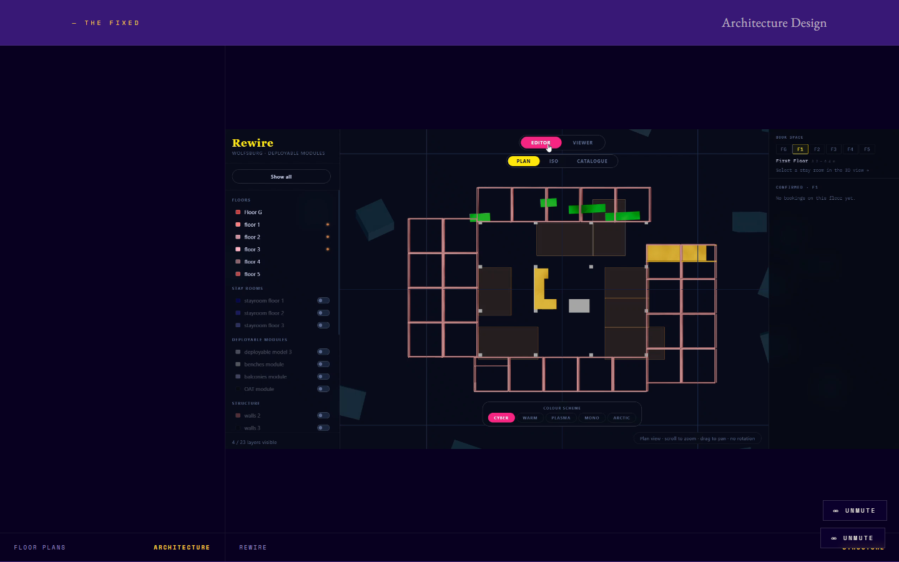
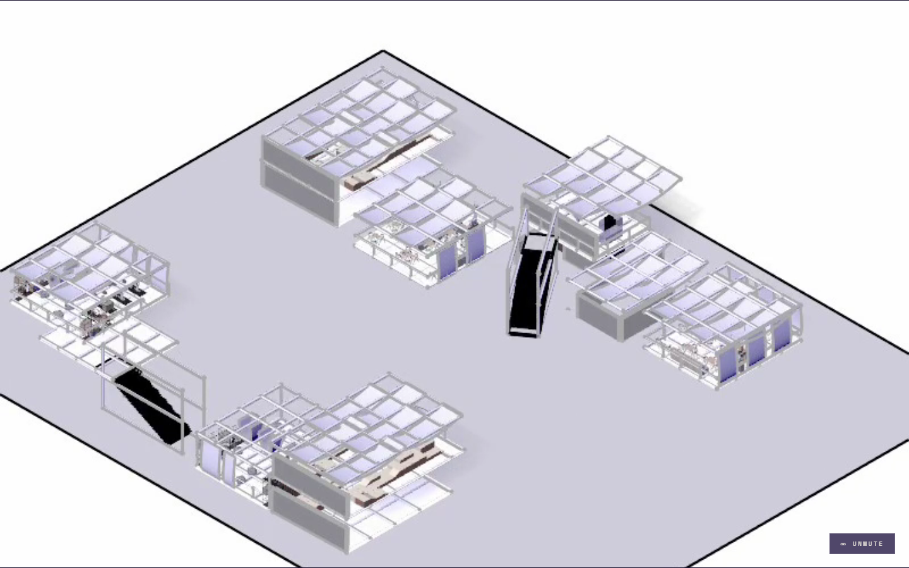
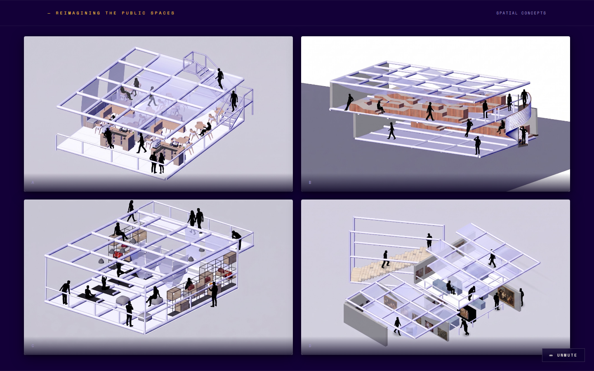
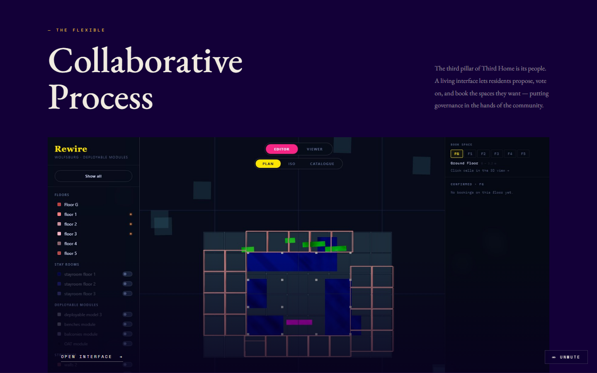
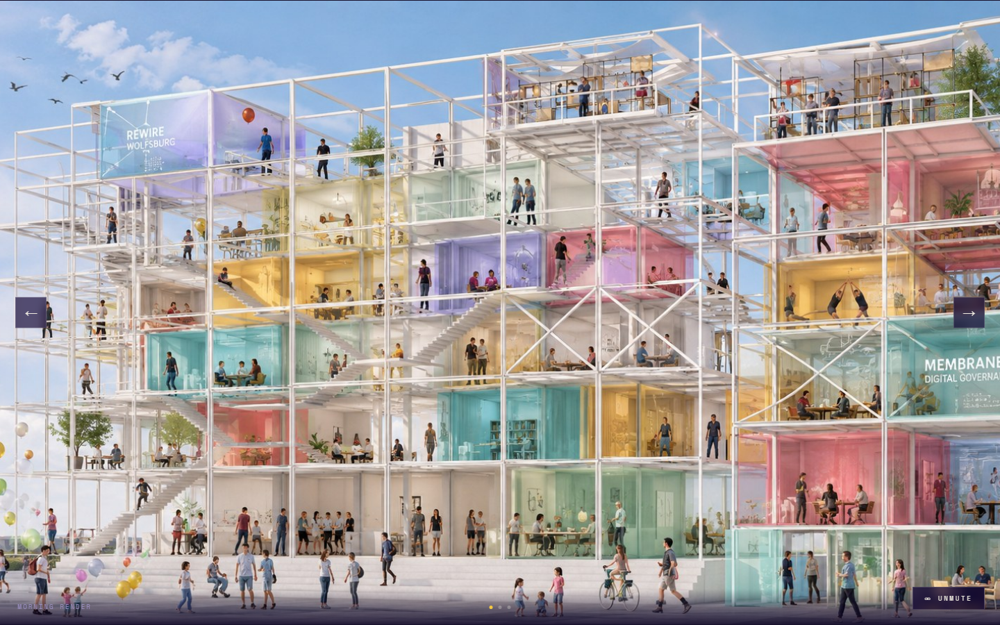
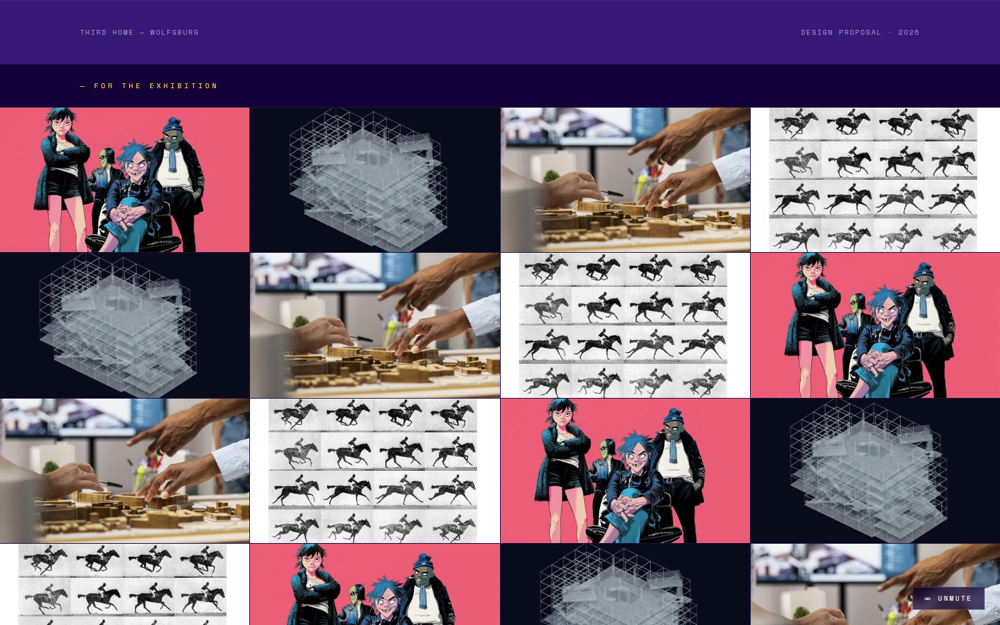

1 / 9 — Cover

2 / 9 — How it works: the governance interface

3 / 9 — Site location and features: urban context

4 / 9 — The fixed: architecture design (floor plans)

5 / 9 — The fixed: structure (roof modules)

6 / 9 — Reimagining the public spaces: spatial concepts

7 / 9 — The flexible: collaborative process

8 / 9 — Visual render

9 / 9 — For the exhibition